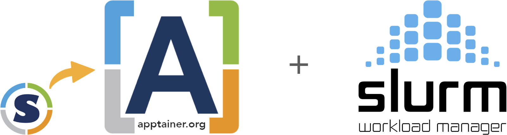

Remote Computing with High Performance Computer (HPC)¶

Expected Outcomes
- Being able to log onto the HPC and start an interactive node
- Know basic HPC related commands
- Execute containerized code through Singularity/Apptainer
- Being able to search and load specific software
- Execute NextFlow scripts on the HPC
Through FOSS and FOSS+ we have learned about container technology and how it can affect reproducibility by wrapping all the necessary components that allow a specific software to be executed.
Similar to Docker, Singularity/Apptainer is a powerful tool that enables researchers to package entire environments, including software dependencies and libraries, into a single executable file.
Unlike other containerization platforms, Singularity/Apptainer is designed with HPC in mind, allowing seamless integration with cluster computing environments.
The biggest difference between Docker and Singularity/Apptainer, is that with the latter you do not require sudo priviledges. Exciting!
In this workshop, we are going to learn how we can use Singularity/Apptainer on the UA HPC, covering orientation of the HPC, and executing Singularity/Apptainer control commands.
A 10,000ft View of the HPC¶
Next week (Apr 04th) Chris Reidy from UITS is going to talk in more details regarding the hardware specifications of the UA HPC systems.
Here, we are going to concentrate on HOW to operate the HPC system as a general user.
Who is this lesson for?
This workshop is primarely aimed to UA students, grad students, faculty and staff as being part of the University of Arizona grants you access to the UA HPC.
If you are not part of UA... you're still very welcome to take part of this lesson! You may not be able to execute the commands but you can still walk out of this with a good understanding of your institution's own HPC and Singularity/Apptainer. Everyone's welcome!
Logging onto the HPC¶
If you have a UA account, to connect to the HPC you need to use ssh (Secure Shell). Open a terminal, and type:
ssh <UA username>@hpc.arizona.edu
Type your UA password and if successful you'll be greeted with a two-factor login. Select which choice, and complete the authentification. Once you are past the authentification steps, you will enter the Bastion server. This step has 2 purposes:
- Protect from attacks.
- Select what HPC system you want to use.
Note: the Bastion server is NOT YET the HPC! Here you cannot submit jobs or run analyes. Type shell in order to select what system you want to use.
The whole process (from logging to selecting the system) looks like the following:
ssh cosi@hpc.arizona.edu
(cosi@hpc.arizona.edu) Password:
(cosi@hpc.arizona.edu) Duo two-factor login for cosi
Enter a passcode or select one of the following options:
1. Duo Push to XXX-XXX-8418
2. SMS passcodes to XXX-XXX-8418
Passcode or option (1-2): 1
Success. Logging you in...
Last login: Tue Mar 26 14:52:39 2024 from dhcp-10-132-212-1.uawifi.arizona.edu
This is a bastion host used to access the rest of the RT/HPC environment.
Type "shell" to access the job submission hosts for all environments
-----------------------------------------
[cosi@gatekeeper ~]$ shell
Last login: Wed Mar 20 10:30:25 2024 from gatekeeper.hpc.arizona.edu
***
The default cluster for job submission is Puma
***
Shortcut commands change the target cluster
-----------------------------------------
Puma:
$ puma
(puma) $
Ocelote:
$ ocelote
(ocelote) $
ElGato:
$ elgato
(elgato) $
-----------------------------------------
[cosi@wentletrap ~]$ ocelote
(ocelote) [cosi@wentletrap ~]$
At this point you are in the Login Node, where you can submit jobs or ask for an interactive node.

Choosing a System¶
In the example above, we chose the Ocelote system. Notice how there are 2 other choices: Puma and El Gato. Without going in too much detail, here are some of the statistics regarding the 3 HPC systems at the UA HPC.
| System | Year of Aquisition | Processors | RAM | GPU |
|---|---|---|---|---|
| Puma | 2020 | 2x AMD Zen2 48 CPU (94 cores total) | 512GB | 6x Nvidia V100S |
| Ocelote | 2016 | 2x Xeon E5-2695v3 14-core (28 cores total) | 192GB | 46x Nvidia P100 |
| El Gato | 2013 | 2x Xeon E5-2650v2 8-core (16 core total) | 64GB | removed as obsolete |
Find the full systems specs at the official UA HPC documentatio resources page.
El Gato is the oldest system, and potentially not useful for heavy research. Puma is the newest and most requested, whislt Ocelote is the "middle child": not as popular but still able to pack a punch.
Depending on what your work is, your best bet would be Puma for heavy computation (if you are ok with waiting long queues); However, if your jobs aren't as taxing, then Ocelote could easily be a safe choice.
For this workshop, we are going to be using Ocelote.
Checking Available Resources¶
Allocations¶
Once past the Bastion server and logged into the Ocelote login node, you are able to submit jobs or request an interactive node. Before you do so, it is wise to check your available resources. These resources are the ones made available to you by your PI or working group.
In order for you to check your resources, type va.
(ocelote) [cosi@wentletrap ~]$ va
Windfall: Unlimited
PI: parent_1743 Total time: 100000:00:00
Total used*: 1:00:00
Total encumbered: 0:00:00
Total remaining: 99999:00:00
Group: datalab Time used: 1:00:00 Time encumbered: 0:00:00
*Usage includes all subgroups, some of which may not be displayed here
va allows you to view all of the resources available from all the groups you are part of.
Storage¶
There are a number of ways one can approach storage on the HPC:
- Your own folder (in
/home/): 50GB limit - Your group (in
/groups/): 500GB limit - Your PI research (in
/xdisk/): 20TB
Four the purpose of this workshop, we can access the datalab group storage in /groups/cosi (we will try and rename it in the future).
Queues and Submissions¶
One can check queue times and sumbissions by executing the SLURM command squeue. This will display the job id, submission type (standard, windfall, high priority), name of submission, user, status (queued, running), time elapsed, number of used nodes, and nodelist.
(ocelote) [cosi@wentletrap ~]$ squeue
JOBID PARTITION NAME USER ST TIME NODES NODELIST(REASON)
2875825_[432-1000] standard qchem snanayak PD 0:00 1 (AssocGrpCPUMinutesLimit)
2890485 standard R92L_Met krishnag PD 0:00 1 (Dependency)
2890484 standard R92L_Met krishnag PD 0:00 1 (Dependency)
2890483 standard R92L_Met krishnag PD 0:00 1 (Dependency)
2881573 standard R92W_Met krishnag PD 0:00 1 (Dependency)
2881572 standard R92W_Met krishnag PD 0:00 1 (Dependency)
2802511 standard eigen krishnag PD 0:00 1 (Dependency)
2949224 standard brutefor theronir PD 0:00 1 (None)
2898419 standard start_so mmartino PD 0:00 1 (Dependency)
2898418 standard make_sor mmartino PD 0:00 1 (Dependency)
2898416 standard start_so mmartino PD 0:00 1 (Dependency)
2898415 standard make_sor mmartino PD 0:00 1 (Dependency)
2898410 standard start_so mmartino PD 0:00 1 (Dependency)
2898409 standard make_sor mmartino PD 0:00 1 (Dependency)
. . . . . . . .
. . . . . . . .
. . . . . . . .
2884142 windfall li_d_t_6 bubin R 2-06:58:50 1 i5n14
2884107 windfall li_d_t_4 bubin R 2-07:00:26 1 i6n8
2884098 windfall li_d_t_7 bubin R 2-07:00:50 1 i6n5
2880486 windfall be_10b teodar R 4-22:35:44 1 i16n5
2880487 windfall be_9b teodar R 4-22:35:44 1 i16n6
2880488 windfall be_7b teodar R 4-22:35:44 1 i16n12
2880489 windfall be_2b teodar R 4-22:35:44 1 i16n16
Likely, this will output 100s of lines, therefore if you want to check on your own job, you could use the CLI and grep to select the running submission (e.g., squeue | grep <username> or squeue --user $NETID).
HPC, SLURM and Jobs Submissions¶

All of the UA HPC systems run on a workload manager and job scheduler named SLURM (Simple Linux Utility for Resource Management). It's designed to manage and schedule computing resources such as CPUs, GPUs, memory, and storage across a cluster of interconnected nodes.
You can learn more on SLURM and HPC system commands here.
Job Submissions¶
There are 2 ways one can submit jobs onto the HPC system. The first is to run a batch job, which is the more popular submission type, whilst the other is by requesting an interactive node.
Batch jobs¶
As we are not going to be using batch submissions, we are not going to be going into too much detail. However, here is what you need to know. For more details on running batch jobs, visit the official documentation page on batch jobs.
Writing a Batch Script
Batch scripts require a number of job directives. These are similar to the Dockerfile instructions, but instead of telling Docker how to build the image, these instead tell the SLURM system what to do with the job. The essential directives are the following:
| Directive | Purpose |
|---|---|
#SBATCH --account=group_name |
Specify the account where hours are charged. |
#SBATCH --partition=partition_name |
Set the job partition. This determines your job's priority and the hours charged. |
#SBATCH --time=DD-HH:MM:SS |
Set the job's runtime limit in days, hours, minutes, and seconds. A single job cannot exceed 10 days or 240 hours. |
#SBATCH --nodes=N |
Allocate N nodes to your job. |
#SBATCH --cpus-per-task=M and #SBATCH --ntasks=N |
ntasks specifies the number of tasks (or processes) the job will run. By default, you will be allocated one CPU/task. This can be increased by including the additional directive --cpus-per-task. |
#SBATCH --mem=Ngb |
Select N gb of memory per node. If "gb" is not included, this value defaults to MB. |
After setting your directives, you can instruct the HPC to do what you require similar to a bash script.
Here's an example of a batch job:
#!/bin/bash
#SBATCH --job-name=blast_job # Job name
#SBATCH --partition=standard # Sets the job priority to standard
#SBATCH --nodes=1 # Number of nodes
#SBATCH --ntasks=1 # Number of tasks (processes) per node
#SBATCH --cpus-per-task=4 # Number of CPU cores per task
#SBATCH --mem=8G # Memory per node (in this case, 8GB)
#SBATCH --time=02:00:00 # Time limit (HH:MM:SS)
# Load necessary modules
module load blast/2.12.0 # Load BLAST module (adjust version as needed)
# Change to the directory where the job will run
cd $SLURM_SUBMIT_DIR
# Define input and output files
query_file="query.fasta" # Input query file (FASTA format)
database_file="database.fasta" # BLAST database file (FASTA format)
output_file="blast_results.out" # Output file for BLAST results
# Run BLAST command
blastp -query $query_file -db $database_file -out $output_file -evalue 0.001 -num_threads $SLURM_CPUS_PER_TASK
Submitting a Batch Script
- To submit jobs you need to use
sbatch, such assbatch script.slurm - To cancel your job you do
scancel, such asscancel $JOBIDorscancel -u $NETID
This will submit your job to the queue. Execution will depend on your submission type (partition).
Launching an Interactive Node¶
An interactive node, unlike batch jobs which are run asynchronously, allows immediate access to compute. Similar to batch jobs, interactive nodes are submitted to the queue, but once available, you will receive a prompt for a node with the selected resources. Read more on how to launch interactive jobs in the official documentation.
The Quick and Dirty
Don't need a lot of resources and just want access to the compute?
Just type interactive.
Disclaimer: you may require to wait longer as your job is going to fall in the windfall queue.
Following are a list of useful flags (options) for setting up the interactive node.
| Flag | Default value | Description | Example |
|---|---|---|---|
-n |
1 | Number of CPUs requested per node | interactive -n 8 |
-m |
4GB | Memory per CPU | interactive -m 5GB |
-a |
none | Account (group) to charge | interactive -a datalab |
--partition= |
windfall | Partition to determine CPU time charges and is set to windfall when no account is specified, and is set to standard when an account is provided. | interactive --partition=windfall |
-t |
01:00:00 | Time allocated to session. | interactive -t 08:00:00 |
-N |
1 | Number of nodes. | There is no reason to exceed 1 node unless the number of CPUs requested is greater than the number of CPUs per node on a given cluster. |
An example for an interactive node is:
interactive -n 8 -m 16GB -a datalab -t 02:00:00
The above example will request an interactive node with 8 cores, 16GB RAM, "charging" the datalab, running for 2 hours. Try it!
Modules
There are 100s of tools installed on the HPC, few of which are available on the login screen. These tools are available only during a batch job submission or within interactive jobs.
To see what tools are already running, or which are available, you will need to use the module command.
Helpful module commands
| Command | Purpose |
|---|---|
module list |
Lists loaded modules |
module avail |
Lists available modules |
module spider |
Lists ALL modules |
module load |
Loads a module |
module help |
Help command! |
Singularity/Apptainer¶
In 2021, the Sylabs, the developers behind the original Singularity, made a fork of the original project and renamed it SingularityCE (Community Edition). This would allow for the SingularityCE to be compliat with FOSS and allowing for the community to contribute to the builds. The Singularity team then joined the Linux Foundation and decided to rename their effor to Apptainer.
The technology behind Singularity/Apptainer is similar to the one of Docker, but, as mentioned before, it was created with the HPC in mind, and therefore bypasses the requirement of sudo.
Note
Until now we have used Singularity/Apptainer to refer to the same software. Onwards, you can decide whether to use Singularity OR Apptainer; in order to keep up with the latest release, we are going to be executing apptainer commands.
Docker vs SingularityCE & Apptainer in the blink of an eye
Apptainer and SingularityCE are 100% compatible with Docker but they do have some distinct differences
Docker
Docker containers run as root
- This privilege is almost never supported by administrators of High Performance Computing (HPC) centers. Meaning Docker is not, and will likely never be, installed natively on your HPC cluster.
uses compressed layers to create one image
SingularityCE & Apptainer:
Same user and group identity inside as outside the container
User only has root privileges if elevated with sudo when the container is run
Can run and modify any existing Docker image
- These key differences allow Singularity to be installed on most HPC centers. Because you can run virtually all Docker containers in Singularity, you can effectively run Docker on an HPC.
General Executable Commands¶
Resources:
- https://cc.cyverse.org/singularity/intro/
- https://cc.cyverse.org/singularity/hpc/
- https://cc.cyverse.org/singularity/advanced/
Apptainer’s command line interface allows you to build and interact with containers transparently. You can run programs inside a container as if they were running on your host system. You can easily redirect IO, use pipes, pass arguments, and access files, sockets, and ports on the host system from within a container.
help¶
The help command gives an overview of Apptainer options and subcommands as follows:
$ apptainer help pull
Pull an image from a URI
Usage:
apptainer pull [pull options...] [output file] <URI>
Description:
The 'pull' command allows you to download or build a container from a given
URI. Supported URIs include:
library: Pull an image from the currently configured library
library://user/collection/container[:tag]
docker: Pull a Docker/OCI image from Docker Hub, or another OCI registry.
docker://user/image:tag
shub: Pull an image from Singularity Hub
shub://user/image:tag
oras: Pull a SIF image from an OCI registry that supports ORAS.
oras://registry/namespace/image:tag
http, https: Pull an image using the http(s?) protocol
https://example.com/alpine.sif
Options:
--arch string architecture to pull from library (default
"amd64")
--arch-variant string architecture variant to pull from library
--dir string download images to the specific directory
--disable-cache do not use or create cached images/blobs
--docker-host string specify a custom Docker daemon host
--docker-login login to a Docker Repository interactively
-F, --force overwrite an image file if it exists
-h, --help help for pull
--library string download images from the provided library
--no-cleanup do NOT clean up bundle after failed build,
can be helpful for debugging
--no-https use http instead of https for docker://
oras:// and library://<hostname>/... URIs
Examples:
From a library
$ apptainer pull alpine.sif library://alpine:latest
From Docker
$ apptainer pull tensorflow.sif docker://tensorflow/tensorflow:latest
$ apptainer pull --arch arm --arch-variant 6 alpine.sif docker://alpine:latest
From Shub
$ apptainer pull apptainer-images.sif shub://vsoch/apptainer-images
From supporting OCI registry (e.g. Azure Container Registry)
$ apptainer pull image.sif oras://<username>.azurecr.io/namespace/image:tag
For additional help or support, please visit https://apptainer.org/help/
search¶
Just like with Docker, you can search the Apptainer container registries for images.
$ apptainer search tensorflow
pull¶
The easiest way to use a Apptainer is to pull an existing container from one of the Registries.
$ apptainer pull library://lolcow
Not only you can pull fromt the Apptainer registries/libraries, but you can pull from Docker.
$ apptainer pull docker://alpine
In my humble opinion...
This is whre Apptainer shines: you can pull from Docker and run Docker built images on the HPC! These are automatically converted to Apptainer images (.sif) and executable on the HPC!
... so where are the Apptainer .sif images stored?
Right where in the directory you are pulling them to. Check with cd!
Obtaining Images¶
As metioned earlier, you can use the pull command to download pre-built images from a number of Container Registries, here we'll be focusing on the DockerHub.
Container Registries:
library://- images hosted on Sylabs Clouddocker://- images hosted on Docker Hublocalimage://- images saved on your machineyum://- yum based systems such as CentOS and Scientific Linuxdebootstrap://- apt based systems such as Debian and Ubuntuarch://- Arch Linuxbusybox://- BusyBoxzypper://- zypper based systems such as Suse and OpenSuseshub://- (archived) images hosted on Singularity Hub, no longer maintained
Pulling an image from Singularity Hub¶
Similar to previous example, in this example I am pulling a base Ubuntu container from Singularity-Hub:
$ apptainer pull shub://singularityhub/ubuntu
INFO: Downloading shub image
88.6MiB / 88.6MiB [=============================================================================] 100 % 39.1 MiB/s 0s
Re/naming
You can give the the container using the --name flag: such as apptainer pull --name my-own-ubuntu-pulled-image.sif shub://singularityhub/ubuntu
Pulling an image from Docker Hub¶
This example pulls an ubuntu:22.04 image from DockerHub and saves it to the working directory.
$ apptainer pull docker://ubuntu:22.04
INFO: Converting OCI blobs to SIF format
INFO: Starting build...
Getting image source signatures
Copying blob bccd10f490ab done
Copying config ca2b0f2696 done
Writing manifest to image destination
Storing signatures
2024/03/27 20:14:50 info unpack layer: sha256:bccd10f490ab0f3fba61b193d1b80af91b17ca9bdca9768a16ed05ce16552fcb
INFO: Creating SIF file...
Interacting with Images¶
You can interact with images in several ways such as run, shell and exec.
For these examples we will use a cowsay_latest.sif image that can be pulled from the Docker Hub.
$ apptainer pull docker://tswetnam/cowsay
INFO: Converting OCI blobs to SIF format
INFO: Starting build...
Getting image source signatures
Copying blob 05e030abce7b done
Copying blob b4624b3efe06 done
Copying blob 6cf436f81810 done
Copying blob 987088a85b96 done
Copying blob d42beb8ded59 done
Copying config ee9e20351a done
Writing manifest to image destination
Storing signatures
2024/03/27 20:16:29 info unpack layer: sha256:6cf436f81810f067c6d4ffca6793eae7cb6d38456715b0707d8a5a2d1acccf12
2024/03/27 20:16:29 warn rootless{dev/full} creating empty file in place of device 1:7
2024/03/27 20:16:29 warn rootless{dev/null} creating empty file in place of device 1:3
2024/03/27 20:16:29 warn rootless{dev/ptmx} creating empty file in place of device 5:2
2024/03/27 20:16:29 warn rootless{dev/random} creating empty file in place of device 1:8
2024/03/27 20:16:29 warn rootless{dev/tty} creating empty file in place of device 5:0
2024/03/27 20:16:29 warn rootless{dev/urandom} creating empty file in place of device 1:9
2024/03/27 20:16:29 warn rootless{dev/zero} creating empty file in place of device 1:5
2024/03/27 20:16:30 info unpack layer: sha256:987088a85b9606eb474a365eb210db765ff0d011ee099a6e3de5087435c6f966
2024/03/27 20:16:30 info unpack layer: sha256:b4624b3efe0617e59ed3998407eafdbe1cb6451346a6cabd066b6e253f50efb1
2024/03/27 20:16:30 info unpack layer: sha256:d42beb8ded595df5627ad4ef31bf528a6fdbfbd11d82f9023152738d6b05a7fa
2024/03/27 20:16:30 info unpack layer: sha256:05e030abce7b562606031bcc54646a868984685f4c89c7c354f34f1f6e502917
INFO: Creating SIF file..
$ ls
alpine_latest.sif lolcow_latest.sif ubuntu_22.04.sif cowsay_latest.sif
run¶
Apptainer containers contain runscripts. These are user defined scripts that define the actions a container should perform when someone runs it. The runscript can be triggered with the run command, or simply by calling the container as though it were an executable.
$ apptainer run cowsay_latest.sif
INFO: underlay of /etc/localtime required more than 50 (76) bind mounts
____________________________________
/ Q: Do you know what the death rate \
\ around here is? A: One per person. /
------------------------------------
\ ^__^
\ (oo)\_______
(__)\ )\/\
||----w |
|| ||
shell¶
The shell command allows you to spawn a new shell within your container and interact with it as though it were a small virtual machine.
$ apptainer shell cowsay_latest.sif
INFO: underlay of /etc/localtime required more than 50 (76) bind mounts
(ocelote) Apptainer>
The change in prompt indicates that you have entered the container (though you should not rely on that to determine whether you are in container or not).
Once inside of a Apptainer container, you are the same user as you are on the host system.
(ocelote) Apptainer> whoami
cosi
Type exit to exit the container.
The more you know
shell also works with the library://, docker://, and shub:// URIs.
This creates an ephemeral container* that disappears when the shell is
exited.
Ephemeral container*: a short-lived container instance that is created dynamically to perform a specific task or process and then terminated once the task is complete. These containers are typically used for one-off jobs, temporary operations, or short-duration tasks within a larger computing environment.
exec¶
The exec command allows you to execute a custom command within a container by specifying the image file. For instance, to execute the cowsay program within the cowsay_latest.sif container:
$ apptainer exec cowsay_latest.sif cowsay whoaaaa the grass is soooo green inside the HPC!
INFO: underlay of /etc/localtime required more than 50 (76) bind mounts
_________________________________________
/ whoaaaa the grass is soooo green inside \
\ the HPC! /
-----------------------------------------
\ ^__^
\ (oo)\_______
(__)\ )\/\
||----w |
|| ||
This also creates an ephemeral container that executes a command and disappears.
inspect¶
The inspect command will provide information about labels, metadata, and environmental variables.
$ apptainer inspect cowsay_latest.sif
org.label-schema.build-arch: amd64
org.label-schema.build-date: Wednesday_27_March_2024_20:16:32_MST
org.label-schema.schema-version: 1.0
org.label-schema.usage.apptainer.version: 1.2.5-1.el7
org.label-schema.usage.singularity.deffile.bootstrap: docker
org.label-schema.usage.singularity.deffile.from: tswetnam/cowsay